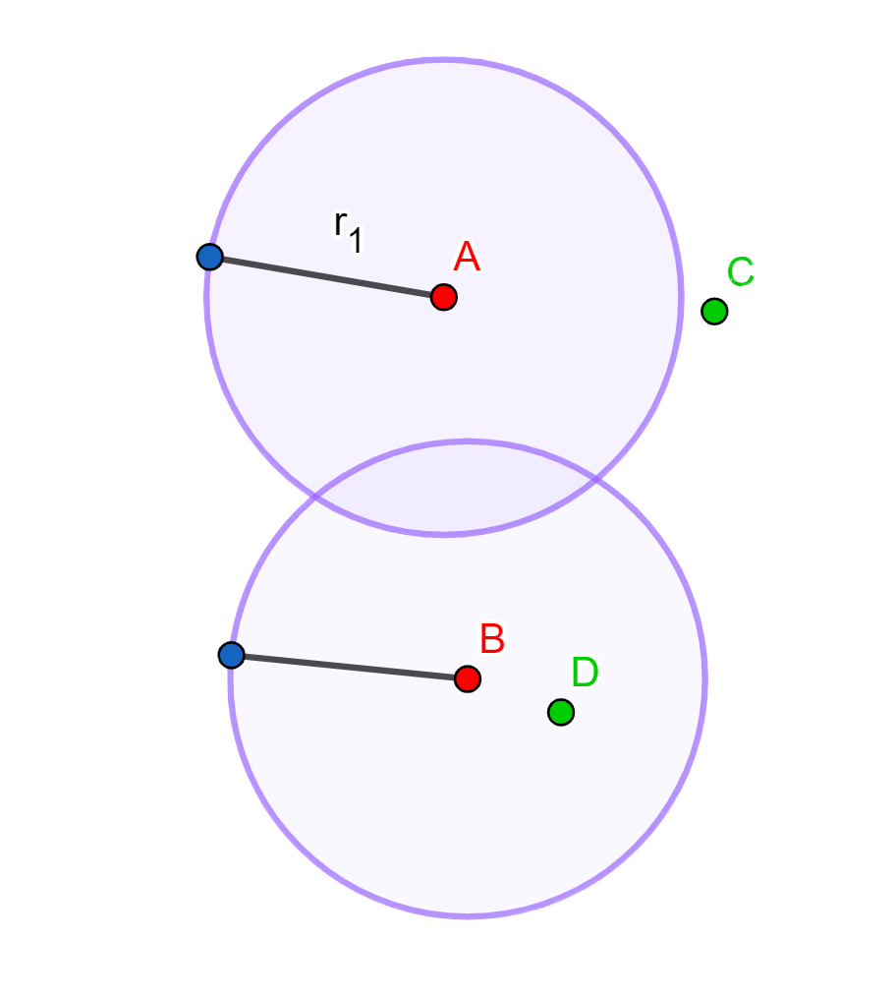
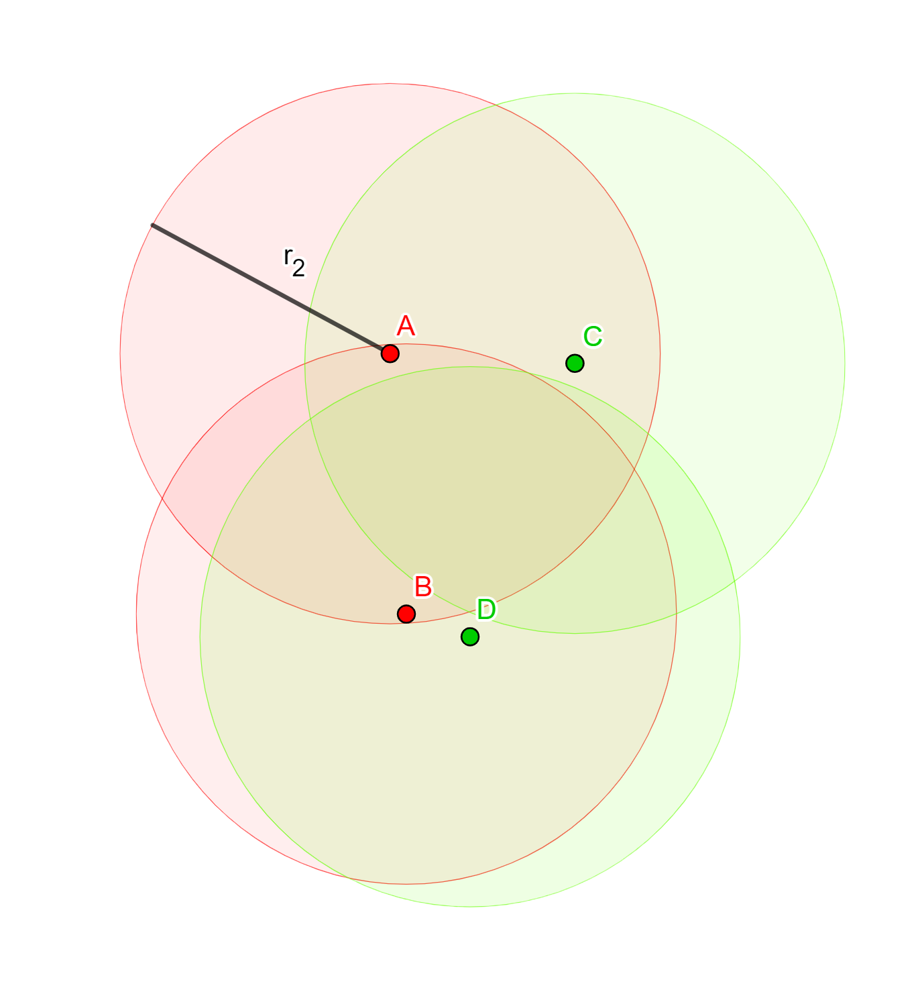

Métrica de Hausdorff
Métrica de Hausdorff para \(F_2(X)\)
En esta sección veremos cómo se define la métrica de Hausdorff sobre el segundo producto simétrico de un continuo \(X\), es decir sobre el conjunto que consta de todos los subconjuntos de \(X\) con a lo más dos puntos, o bien, usando notación, sobre \(F_2(X) = \{\{x,y\}:x,y\in X\}\).
Sea \(X\) un continuo (i.e. un espacio métrico compacto y conexo con más de un punto) con métrica \(d\). Para \(\{x,y\}\in F_2(X)\) y \(r>0\) definimos la nube abierta de radio \(r\) alrededor de \(\{x,y\}\) como $$N_r(\{x,y\}) := B_r(x)\cup B_r(y)\ ,$$ donde las \(B_r\) son las bolas de radio \(r\) con centro en \(x\) y \(y\) respectivamente (en \(X\)). Notemos que si \(x\) es igual a \(y\) entonces \(N_r(\{x,x\}) = N_r(\{x\}) = B_r(x)\). Ahora sí, definimos la métrica de Hausdorff \(\mathcal{H}:F_2(X)\times F_2(X) \to [0,\infty)\) como $$\mathcal{H}(\{a,b\},\{c,d\}) = inf\{r > 0 : \{a,b\}\subset N_r(\{c,d\})\ \text{ y } \ \{c,d\}\subset N_r(\{a,b\})\} .$$ Es decir, la distancia de Hausdorff entre \(\{a,b\}\) y \(\{c,d\}\) es el ínfimo de los números \(r > 0\) tales que los puntos \(a,b\) se quedan contenidos en la nube de radio \(r\) con centro en \(\{c,d\}\) y los puntos \(c,d\) se quedan contenidos en la nube de radio \(r\) con centro en \(\{a,b\}\). Por ejemplo, en la siguiente imagen el punto \(C\) no se queda contenido en la nube de radio \(r_1\) con centro en \(\{A,B\}\) (la región morada) por lo que la distancia de Hausdorff entre \(\{A,B\}\) y \(\{C,D\}\) es mayor a \(r_1\).  Por otro lado, en la siguiente imagen vemos que \(\{A,B\}\) se queda contenido en \(N_{r_2}(\{C,D\})\) (la región verde) y \(\{C,D\}\) se queda contenido en \(N_{r_2}(\{A,B\})\) (la región roja), por lo que la distancia de Hausdorff entre estas parejas de puntos es menor que \(r_2\). 
Dejaremos para la siguiente sección probar que \(\mathcal{H}\) es una métrica. De hecho, en la siguiente sección definiremos la métrica de Hausdorff sobre un conjunto mucho más general: el conjunto de cerrados no vacíos de un continuo \(X\).
Métrica de Hausdorff (más general)
Sea \(X\) un continuo (i.e. un espacio métrico compacto y conexo con más de un punto) con métrica \(d\) y consideremos el conjunto \(2^X=\{A\subseteq X: X\text{ es cerrado y no vacío}\}\). Para cada \(A\in 2^X\) y cada \(x\in X\) definimos la distancia de \(x\) a \(A\) como $$d(x,A) := inf\{d(x,a):a\in A\}$$ y para cada \(r>0\) definimos la nube de radio \(r\) alrededor de \(A\) como $$N_r(A) := \{x\in X:d(x,A) < r \} = \bigcup_{a\in A}B_r(a)\ .$$
Definimos la métrica de Hausdorff \(\mathcal{H}:2^X\times 2^X \to [0,\infty)\) como $$\mathcal{H}(A,B) = inf\{r > 0 : A\subset N_r(B)\ \text{ y } \ B\subset N_r(A)\} .$$ Veamos que ésta es una métrica sobre \(2^X\).
Proposición: \(\mathcal{H}\) es una métrica sobre \(2^X\).
Demostración:
La simetría y la no negatividad se siguen de la definición. Ahora, veamos que, para \(A,B\in 2^X\), \(\mathcal{H}(A,B)=0\) si y sólo si \(A=B\). Si \(\mathcal{H}(A,B)=0\) entonces, para cada \(n\in \mathbb{N}\) se tiene que $$A\subset N_{\frac{1}{n}}(B)\ ,$$ de modo que, si \(a\in A\) entonces, para cada \(n\in \mathbb{N}\), existe \(b_n\in B\) tal que \(d(a,b_n) < \frac{1}{n}\). Así, \(\{b_n\}_{n=1}^\infty\) es una sucesión en \(B\) que converge a \(a\), y como \(B\) es cerrado en \(X\) entonces \(a\in B\). Como \(a\in A\) fue arbitrario, concluimos que \(A\subseteq B\) y de manera análoga se prueba que \(B\subseteq A\), de donde \(A=B\). Para el regreso, si \(A=B\), tenemos que \(A\subset N_r(A)\) para todo \(r > 0\), de donde \(\mathcal{H}(A,B)=\mathcal{H}(A,A)=0\).
Sólo falta probar la desigualdad del triángulo. Sean \(A,B,C\in 2^X\). Probaremos que $$\mathcal{H}(A,C) \leq \mathcal{H}(A,B) + \mathcal{H}(B,C)\ .$$ Sea \(\epsilon > 0\). Sea \(a\in A\) y \(r=\mathcal{H}(A,B)+\epsilon\). Como \(r>\mathcal{H}(A,B)\) entonces \(A\subset N_r(B)\), por lo que existe \(b\in B\) tal que $$d(a,b) < \mathcal{H}(A,B) + \epsilon\ .$$ Como \(b\in B\), de manera análoga, existe \(c \in C\) tal que $$d(b,c) < \mathcal{H}(B,C) + \epsilon\ .$$ De las dos desigualdades anteriores y de la desigualdad del triángulo para \(d\) se sigue que $$d(a,c) \leq d(a,b)+d(b,c) < \mathcal{H}(A,B) + \mathcal{H}(B,C) + 2\epsilon\ ,$$ y así \(d(a,C)<\mathcal{H}(A,B) + \mathcal{H}(B,C) + 2\epsilon\). Como \(a\in A\) fue arbitrario, acabamos de probar que $$A\subset N_{\mathcal{H}(A,B) + \mathcal{H}(B,C) + 2\epsilon}(C)\ .$$ De manera similar podemos probar que $$C\subset N_{\mathcal{H}(C,B) + \mathcal{H}(B,A) + 2\epsilon}(A)\ ,$$ y como \(\mathcal{H}\) es simétrica, esto es equivalente a $$C\subset N_{\mathcal{H}(A,B) + \mathcal{H}(B,C) + 2\epsilon}(A)\ .$$ De la definición de \(\mathcal{H}\) se sigue que $$\mathcal{H}(A,C) \leq \mathcal{H}(A,B) + \mathcal{H}(B,C) + 2\epsilon$$ y como \(\epsilon > 0\) fue arbitrario, concluimos que $$\mathcal{H}(A,C) \leq \mathcal{H}(A,B) + \mathcal{H}(B,C)\ .$$ Por lo tanto, \(H\) es una métrica. \(\square\)